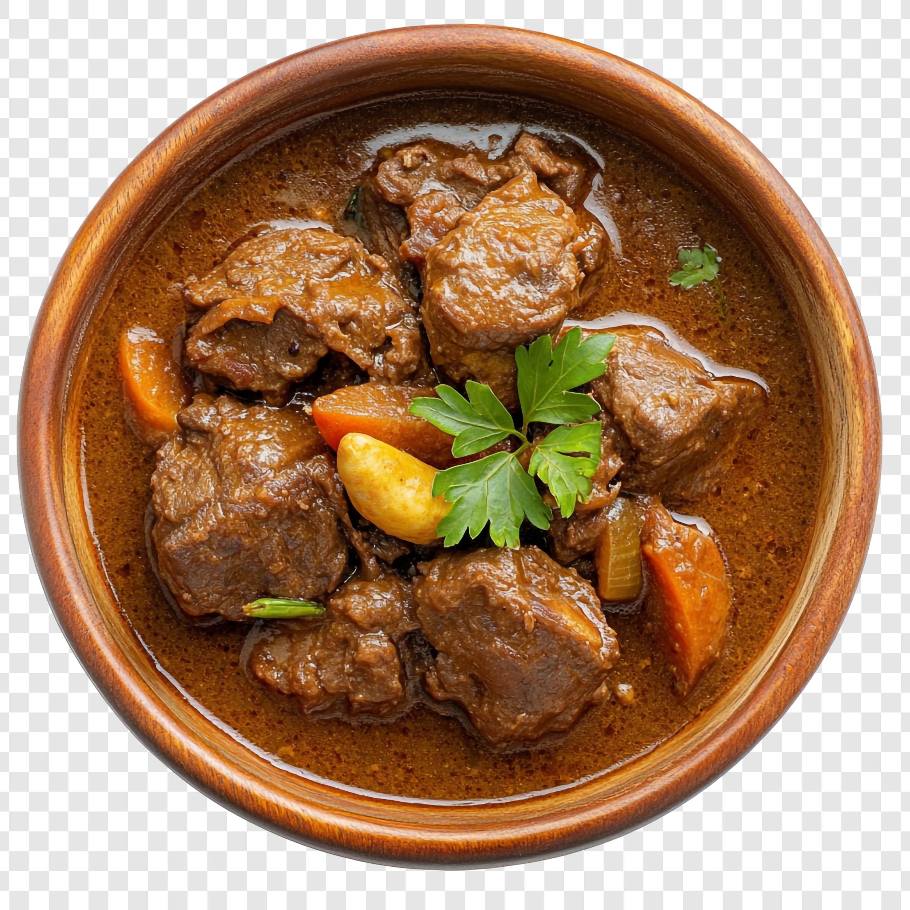

Cowboy Soup

Description
Cowboy Soup is an golden great dish mash-up of chili and vegetable soup, loaded with ground beef, potatoes, and veggies in a rich,flavorful broth.
Ingredients
- Potatoes
- Onion
- Canned Corn
- Garlic
- Carrots
- Ground Beef
- Large Pot
- Taco Seasoning
- Salt
- Black Pepper
Steps To Create Cowboy Soup
- Brown the meat: Cook the ground beef, chopped onion, and garlic in a large pot over medium heat until the beef is no longer pink, then drain the extra grease.
- Add the veggies and broth: Stir in the chopped potatoes, carrots, celery, beef broth, taco seasoning, salt, and black pepper.
- Simmer: Bring the pot to a boil, then turn the heat down to low, cover it, and simmer for about 15–20 minutes until the potatoes and carrots are soft.
- Add the canned goods: Pour in the diced tomatoes, corn, and kidney beans (drained and rinsed).
- Heat through: Let the soup simmer uncovered for another 10 minutes so all the flavors mix together, then serve hot.
Home